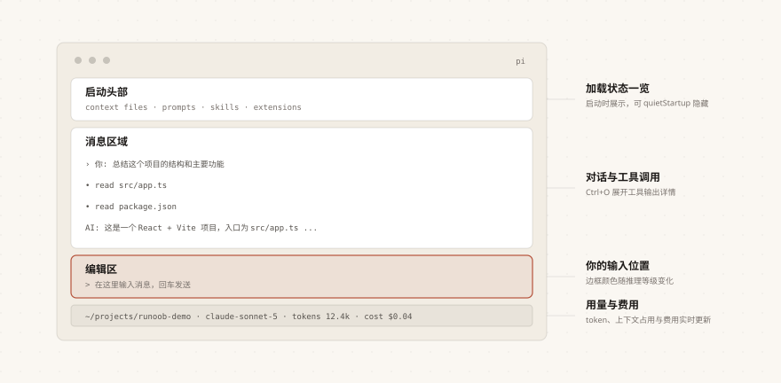

Pi Agent First Conversation
After completing installation and authentication configuration, this chapter takes you through your first complete conversation experience.
You will become familiar with the interface layout and basic operations.
Launch Pi Agent
Enter your project directory and launch Pi Agent:
$ cd ~/projects/runoob-demo $ pi
You will see Pi Agent's interactive interface appear in the terminal.

The interface is divided into four main areas:
| Area | Position | Displayed content |
|---|---|---|
| Startup header | Top | Shortcut hints, loaded context files, prompt templates, Skills, extensions |
| Message area | Middle | User messages, AI replies, tool call details, notifications, and errors |
| Edit area | Bottom input line | Your input location; the border color indicates the current reasoning level |
| Bottom status bar | Bottom | Working directory, session name, token/cache usage, context usage, cost, current model name (total includes AI replies, tool-reported usage, and summary generation consumption) |
If you think the header information shown at startup is too much, you can enable in settingsquietStartupthe option to hide it.
First Task
After entering the interface, type your first request and press Enter:
Help me summarize the structure and main functions of this project.
Pi Agent will use built-in tools to read your project files, analyze the code structure, and then return a summary.
You can see in the message area what the AI is doing—including which tools it called and which files it read.
The output of a complete conversation looks like:
> read README.md（1.2k 字符） > read src/main.ts（3.4k 字符） 这是一个基于 TypeScript 的终端编程助手，主要功能分为会话管理、工具调度和扩展加载三部分。 Tokens: 2.4k 输入 / 410 输出 | 费用 $0.0152
Pi Agent provides four built-in tools by default: read, write, edit, and bash. For full details, see the "Core Concepts Overview" chapter.
Referencing Files
You can reference specific files in a conversation; there are two ways:
Method 1: @ syntax (in-editor search)
Type in the edit area@A fuzzy search of project files will automatically pop up:
@src/app.ts 解释这个文件的功能
Method 2: Command-line arguments
Pass file references directly at startup:
$ pi @README.md "总结一下这个文档" $ pi @src/app.ts @src/app.test.ts "对比这两个文件"
You can also reference image files:
$ pi -p @screenshot.png "这张截图里显示了什么"
Pasting Images
Pi Agent supports sending images in conversations; the operation methods vary slightly across platforms.
| Platform | Operation | Description |
|---|---|---|
| macOS / Linux | Ctrl+V | Paste image from clipboard |
| Windows | Alt+V | Paste image from clipboard |
| Supported terminals | Drag and drop an image into the terminal window | Pass it into the conversation as a file |
Executing Commands in Conversation
You can run shell commands directly from the edit area without exiting Pi Agent:
!npm run lint !git diff
with!Commands beginning with the prefix will be executed, and the output will be automatically sent to the AI for review.
Execute!npm run lintThe result is similar to:
> pi-agent@1.0.0 lint > eslint . 0 errors, 0 warnings
with!!Commands beginning with the prefix will also execute, butwill notsend the output to the AI:
!!echo "这只在本地显示" 这只在本地显示
Using!!the prefix to execute commands that don't need AI review (such as opening files, viewing environment variables) can avoid wasting the context window.
Multiline Input and External Editor
Large blocks of text can be written using multiline input or an external editor; here are the relevant shortcuts.
| Operation | Shortcut |
|---|---|
| Insert newline | Shift+Enter (use Ctrl+Enter in Windows Terminal) |
| Open external editor | Ctrl+G |
When you need to input a large block of text, pressCtrl+Gand the system default editor will open (such as nano, vim, or VS Code); after saving, the content will automatically be filled into Pi Agent's edit area.
Message Queue
Pi Agent allows you to send messages while the AI is working, without having to wait for it to finish:
| Shortcut | Behavior | Description |
|---|---|---|
| Enter | Send steering message | Sent to the AI immediately after the current tool finishes executing |
| Alt+Enter | Send follow-up message | Sent after the AI finishes all its work |
| Escape | Cancel queued messages | Restore the queued messages to the edit area |
| Alt+Up | Retrieve queued message | Take a queued message back to the edit area for modification |
In Windows Terminal, Alt+Enter is the default fullscreen shortcut. If you want Pi Agent to receive this shortcut, refer toMulti-platform deploymentfor instructions on remapping.
Non-interactive Mode
In addition to interactive conversations, you can also use Pi Agent quickly in the following ways:
Examples
pi -p "Summarize this codebase"
# Pipe input: pass file content to the AI
cat README.md | pi -p "Summarize this text"
# One-shot Q&A with an image
pi -p @screenshot.png "What's in this image?"
# Named session (for easy continuation later)
pi --name "Code review" -p "Review the code in the src/ directory"
# Read-only mode (file modifications not allowed)
pi --tools read,grep,find,ls -p "Review code without modifying"
Print mode (-p) is ideal for integrating into scripts and CI pipelines.
Creating a Project Instructions File
To help the AI better understand your project, it's recommended to create an AGENTS.md file.
Save the following content as a Markdown file with the pathproject root/AGENTS.md：
Examples
- Run `npm run check` after modifying code
- Do not run production migrations directly on your local machine
- Keep replies concise, without excessive explanation
- Write code using TypeScript strict mode
- Follow the project's existing code style
Pi Agent will automatically load this file at startup.
It will also load from~/.pi/agent/AGENTS.mdthe global instructions and instruction files in parent directories.
After updating AGENTS.md, use/reloadcommand to hot-reload, no restart needed.
If you previously used Claude Code, existing CLAUDE.md files can be directly recognized and used by Pi Agent without renaming.
Interface Overview
The following is a quick reference for the main shortcuts in Pi Agent's interactive mode:
| Operation | Shortcut | Description |
|---|---|---|
| Submit input | Enter | Send the current contents of the edit area; when the AI is working, it enters the message queue (see Message Queue) |
| Model selection | Ctrl+L | Open the model selector |
| Switch model | Ctrl+P / Shift+Ctrl+P | Cycle forward/backward through models |
| Reasoning level | Shift+Tab | Cycle through reasoning levels |
| Expand/collapse tool output | Ctrl+O | Toggle the display of tool call results |
| Expand/collapse reasoning process | Ctrl+T | Toggle the display of the AI's reasoning process |
| Interrupt operation | Escape | Cancel the current AI operation (see Message Queue) |
| Clear edit area | Ctrl+C | Clear the current contents of the edit area |
| Copy AI's last reply | Ctrl+X | Copy the reply content to the clipboard |
| Path autocompletion | Tab | Complete file paths |
| Exit program | Ctrl+D | Exit the program when the edit area is empty |
| Exit program (direct) | /quit | Exit immediately |